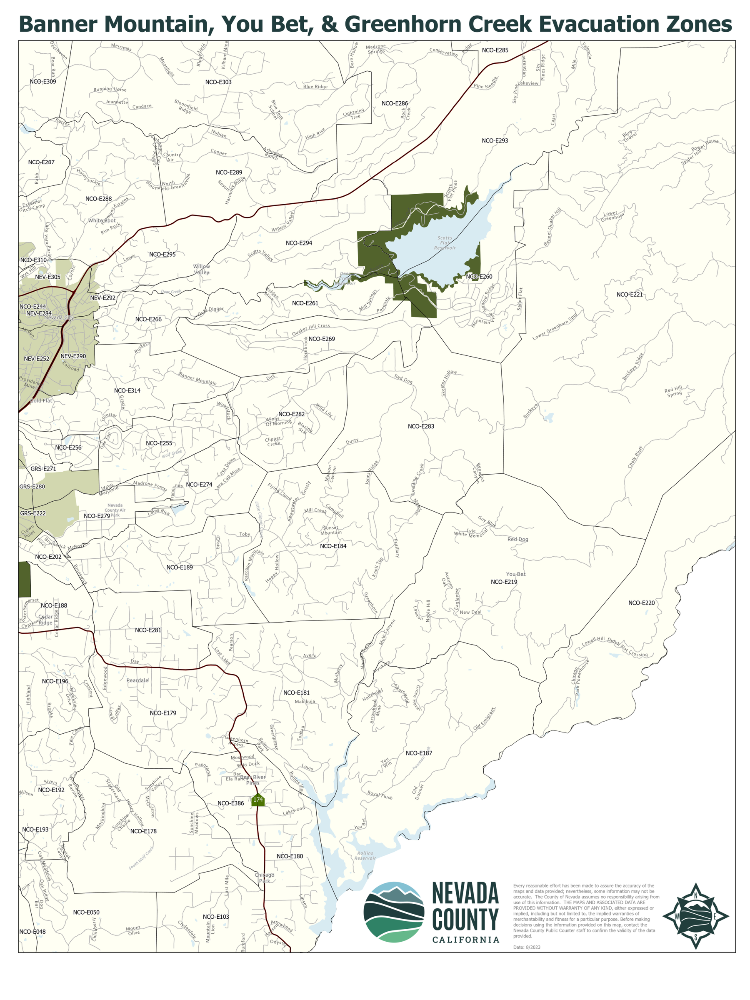
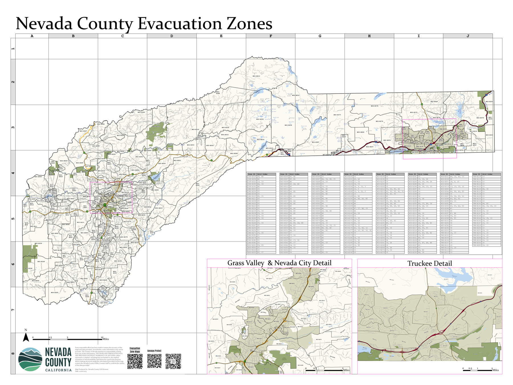

If There's Any Risk of Fire, Leave Immediately
Don't wait for an official evacuation order. Roads on Banner Mountain are narrow, and conditions can turn a slow, orderly drive into a dangerous or even impossible one in minutes. If you see smoke, get an alert, or simply feel uneasy — leave early. You can always come back. Evacuating late is one of the biggest risks our neighborhood faces.
Our Zone
Our neighborhood falls within evacuation zone NCO-E282. Evacuation orders and warnings are issued by zone, so knowing yours — and your neighbors' — helps everyone understand alerts as soon as they go out.
Zone Maps

Our area — Banner Mountain / You Bet / Greenhorn. View full-resolution PDF.

All of Nevada County. View full-resolution PDF.
Register for Alerts
Nevada County pushes evacuation orders and warnings straight to your phone and email — but only if you're signed up. This takes about two minutes.
Get the Apps
Two apps give you real-time situational awareness during a fire. Get both on your phone, and bookmark the browser versions as a backup.
Watch Duty
Live, volunteer-verified wildfire tracking — fire perimeters, evacuation zones, and firefighting activity as it happens.
Genasys Protect
Zone-based evacuation status and alerts — the same tool used to look up NCO-E282 above.
Tune In: KVMR 89.5 FM
Our local community radio station provides good, up-to-date information during fires and other emergencies. Keep a battery-powered or car radio tuned to 89.5 FM — power and cell service are often the first things to go.
More Local Coverage: YubaNet
YubaNet tracks regional fire activity and breaking local news — another good source to check during an active incident.